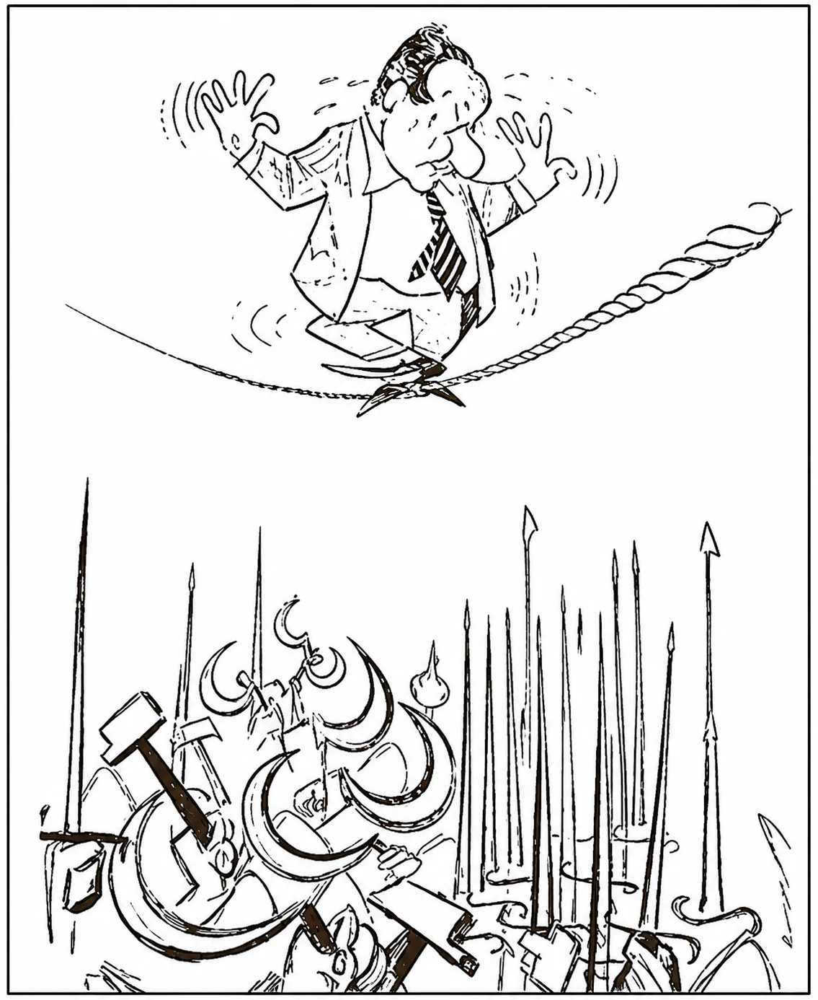
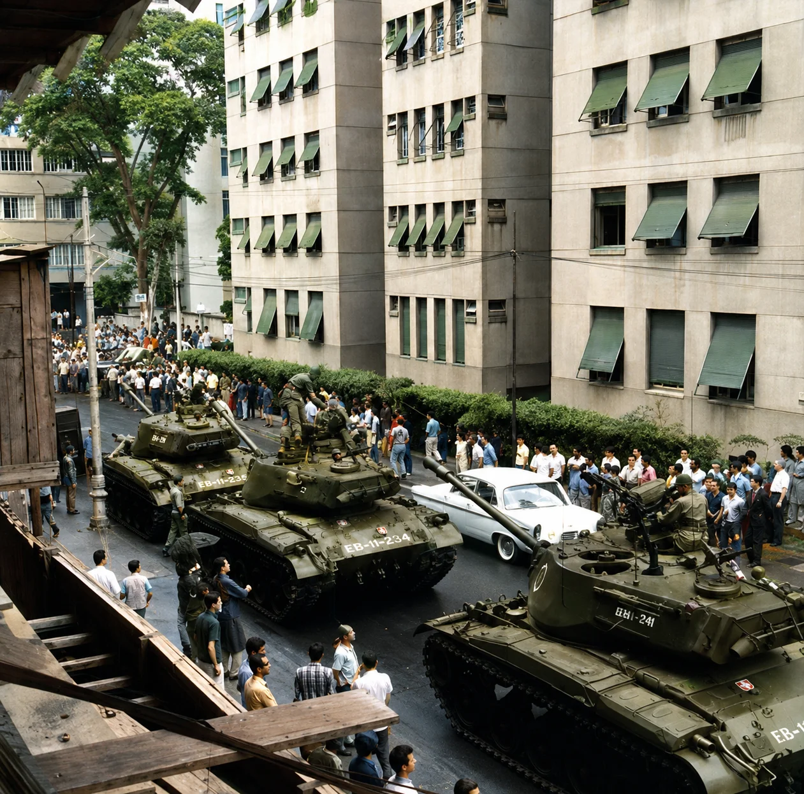
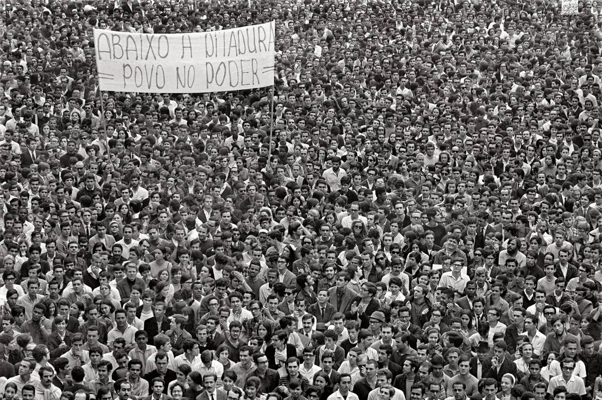

O Contexto de Instabilidade Política
O golpe de 1964 não surgiu do nada: foi o desfecho de uma crise que já vinha se acumulando havia anos.

No início dos anos 1960, o Brasil vivia um clima de forte polarização. O presidente João Goulart (Jango) enfrentava inflação alta, uma economia em desaceleração e pressão de diferentes setores da sociedade. Em março de 1964, ele anunciou as reformas de base — um pacote de mudanças estruturais que incluía reforma agrária, tributária, eleitoral e educacional.
Para setores conservadores, empresários e políticos da UDN, essas reformas representavam um avanço perigoso do "comunismo" sobre o país — mesmo Jango não sendo comunista. Para grupos populares, sindicatos, estudantes e camponeses organizados, as reformas eram uma resposta necessária às desigualdades sociais brasileiras.
Esse clima de radicalização, somado à Guerra Fria (que fazia os Estados Unidos temerem a expansão de governos de esquerda na América Latina), criou as condições para que, em 31 de março de 1964, um movimento das Forças Armadas — apoiado por políticos civis de oposição — depusesse Jango. Em 1º de abril de 1964, a Presidência foi declarada vaga. Começava um regime que duraria 21 anos.
Ao estudar esse período, vale perguntar: quais discursos e tensões daquela época ainda aparecem no debate político atual? E quais mudanças na sociedade brasileira tornam impossível uma repetição idêntica dos acontecimentos de 1964? Comparar permanências e rupturas é uma das habilidades centrais deste tema.
Ditadura e Democracia: dois modos de organizar o poder
Três blocos conceituais — o que é democracia, o que é ditadura e por que a distinção importa hoje — mais um quadro comparativo entre os dois regimes. 6 questões dissertativas intercaladas.
A Institucionalização do Regime: Governo Castelo Branco
O primeiro presidente militar organizou juridicamente o novo regime — e deu início a uma sequência de mudanças que concentrariam cada vez mais poder no Executivo.

O marechal Humberto de Alencar Castelo Branco foi o primeiro militar a ocupar a Presidência, com reconhecimento imediato dos Estados Unidos e apoio de grandes empresários. Seu governo tomou medidas que redesenhariam o funcionamento do Estado brasileiro por duas décadas:
- Elaborou uma nova Constituição em 1967, fortalecendo a Presidência da República e enfraquecendo os poderes Legislativo e Judiciário;
- Criou a Lei de Segurança Nacional, que permitia tratar opositores do governo como "inimigos da pátria";
- Rompeu relações diplomáticas com Cuba, único país socialista da América Latina;
- Revogou a lei que limitava o envio de lucros de multinacionais ao exterior — revertendo a política nacionalista dos governos anteriores.
Muitos trabalhadores perderam a estabilidade no emprego e sofreram com a intervenção do governo em seus sindicatos. Ainda assim, diferente de outras ditaduras da América Latina, os sindicatos brasileiros não foram extintos — o imposto sindical foi mantido, garantindo sua sobrevivência formal, ainda que sob forte controle estatal.
“Nas primeiras semanas depois do golpe [de 1964] percebeu-se tão que as cadeias foram insuficientes. O Maracanã virou presídio; navios da Marinha receberam centenas de ‘subversivos’. Os quartéis em todo o Brasil lotaram de prisioneiros. [...] Cometeram-se tantos abusos que até a imprensa brasileira começou a denunciá-los. O governo Castello Branco, geralmente apresentado como ‘democrático’, prometia investigar, enquanto a violência ia se incorporando ao cotidiano nacional.”
CHIAVENATO, Júlio José. O golpe de 64 e a ditadura militar. 2. ed. São Paulo: Moderna, 2004. p. 178.
AI-1 e Repressão Política nas Primeiras Semanas do Regime
Dois textos historiográficos: Nilson Borges sobre o Ato Institucional nº 1, a Operação Limpeza e a Doutrina de Segurança Nacional; e Júlio José Chiavenato sobre as prisões em massa logo após o golpe. 5 questões dissertativas intercaladas.
O Endurecimento: Costa e Silva e o AI-5
Diante do crescimento das manifestações contrárias ao regime, os militares reagiriam com o mais duro de todos os Atos Institucionais.

Durante o governo do marechal Costa e Silva (1967–1969), cresceram as manifestações contra o regime. Em junho de 1968, mais de 100 mil pessoas foram às ruas do Rio de Janeiro na chamada Passeata dos Cem Mil, protestando contra a morte do estudante secundarista Edson Luís, assassinado pela polícia.
Naquele mesmo ano, um discurso do deputado Márcio Moreira Alves criticando duramente a violência do governo contra estudantes serviu de pretexto para uma reação ainda mais dura: em dezembro de 1968, os líderes do regime decretaram o Ato Institucional nº 5, o AI-5 — o instrumento mais autoritário de toda a ditadura.
Prisão de milhares de pessoas sem necessidade de justificativa; censura prévia a jornais, livros, músicas, teatro e televisão; fechamento do Congresso Nacional; cassação de mandatos de centenas de políticos; suspensão do direito ao habeas corpus (o instrumento legal que protege alguém de prisão arbitrária); e afastamento de juízes.
O AI-5 e o endurecimento da ditadura militar“[...] o AI-5, de 13 de dezembro de 1968, foi um instrumento que deu ao regime poderes absolutos e cuja primeira consequência foi o fechamento do Congresso Nacional por quase um ano e o recesso dos mandatos de senadores, deputados e vereadores, que passaram a receber somente a parte fixa de seus subsídios. Entre outras medidas do AI-5, destacam-se: suspensão de qualquer reunião de cunho político; censura aos meios de comunicação, estendendo-se à música, ao teatro e ao cinema; suspensão do habeas corpus para os chamados crimes políticos; decretação do estado de sítio pelo presidente da República em qualquer dos casos previstos na Constituição; e autorização para intervenção em estados e municípios. [...]”
PONTUAL, Helena Daltro. História das Constituições. Senado Federal. Disponível em: senado.gov.br. Acesso em: 9 nov. 2018.
Em 1969, Costa e Silva deixou a Presidência por motivos de saúde. Uma junta militar governou interinamente por cerca de dois meses e, nesse período, aprovou uma emenda à Constituição que chegou a incluir a pena de morte e a prisão perpétua para casos de "subversão".
O AI-5 e o Endurecimento da Ditadura Militar
Texto de Helena Daltro Pontual (Senado Federal) com as medidas previstas no Ato Institucional nº 5 e a charge de Ziraldo “O ministro quer dialogar com você”, publicada no Correio da Manhã em 23 de junho de 1968. 5 questões dissertativas intercaladas.
Os "Anos de Chumbo": Governo Médici
O período mais repressivo da história republicana brasileira coincidiu, contraditoriamente, com um forte crescimento econômico.
Sob o general Emílio Garrastazu Médici (1969–1974), o Brasil viveu um período de forte crescimento conhecido como "milagre econômico". Entre seus motivos estavam o aumento da produção industrial, o crescimento das exportações, a expansão do crédito para as classes médias e empréstimos obtidos no exterior. O governo também investiu pesadamente em rodovias, usinas hidrelétricas e comunicações — a ponte Rio-Niterói, inaugurada em 1974, é um símbolo dessas obras.
Esse crescimento, porém, teve um custo social alto: para conter a inflação, o governo praticou o arrocho salarial, mantendo os salários baixos enquanto sindicatos e associações de trabalhadores permaneciam sob vigilância policial constante. E o "milagre" foi passageiro: dependia de um mercado externo favorável e de empréstimos internacionais. Quando o preço do petróleo disparou na década de 1970, a economia brasileira sentiu o impacto, e a inflação e a dívida externa voltaram a crescer.
O governo Médici aperfeiçoou uma estrutura de repressão que invadia universidades e perseguia professores, jornalistas, artistas, estudantes e religiosos considerados opositores. Os principais órgãos desse aparato eram:
- SNI (Serviço Nacional de Informações): coordenava a espionagem e o monitoramento de opositores;
- DOPS (Delegacias de Ordem Política e Social): polícia estadual voltada à repressão política;
- DOI-Codi (Destacamento de Operações de Informações – Centro de Operações de Defesa Interna): o principal centro de prisão, interrogatório e tortura, criado a partir da antiga Oban (Operação Bandeirantes).
Qualquer cidadão suspeito de "subversão" podia ser preso, torturado — com métodos como espancamentos, afogamentos e choques elétricos — e até morto, muitas vezes sem que a própria família soubesse de seu paradeiro.
Movimentos de Resistência à Ditadura
Diante da repressão, diferentes setores da sociedade brasileira resistiram — pelas armas, pela arte e pela organização política.
Durante os governos militares, surgiram organizações que defendiam a resistência armada como caminho para derrubar o regime e instaurar o socialismo no Brasil. As principais foram a Ação Libertadora Nacional (ALN), liderada pelo ex-deputado Carlos Marighella, a Vanguarda Popular Revolucionária (VPR), do ex-capitão Carlos Lamarca, e o Movimento Revolucionário 8 de Outubro (MR-8).
Essas organizações realizavam assaltos a bancos para financiar suas ações e sequestros de diplomatas estrangeiros para trocá-los por presos políticos — como o sequestro do embaixador dos Estados Unidos, Charles Elbrick, em 1969, trocado por 15 presos políticos. A mais conhecida ação de resistência rural foi a Guerrilha do Araguaia, um foco guerrilheiro na região amazônica duramente reprimido pelo Exército. Até 1974, praticamente todos os focos de luta armada haviam sido destruídos, com seus integrantes presos ou mortos.
Ao lado da luta armada, existiu uma ampla resistência pacífica: abaixo-assinados, protestos de rua, oposição parlamentar, jornais alternativos, peças de teatro e festivais de música popular brasileira desafiavam a censura, mesmo sob risco de perseguição.
O compositor Geraldo Vandré tornou-se símbolo dessa resistência com a canção "Pra não dizer que não falei das flores", apresentada em 1968 e depois proibida pelos militares, que o forçaram ao exílio. O jornal O Pasquim, lançado em 1969 em reação ao AI-5, usava o humor para driblar a censura — em 1970, censores chegaram a ser instalados dentro da própria redação do jornal, e parte de sua equipe foi presa pelo DOI-Codi.
Diferente da censura que pune depois da publicação, a censura prévia exigia que jornais, livros, músicas e programas de TV fossem aprovados por censores do governo antes de chegar ao público — muitas vezes deixando espaços em branco ou trechos cortados como forma de protesto silencioso.
Diferentes formas de resistir
Note que a resistência à ditadura não teve um único rosto: houve quem pegasse em armas, quem escrevesse canções, quem fizesse humor em um jornal, quem se organizasse dentro de igrejas e sindicatos. Por que será que, diante de uma mesma opressão, grupos diferentes escolhem estratégias tão distintas de resistência?
Geisel e a Abertura "Lenta, Gradual e Segura"
O primeiro passo rumo à democracia veio, paradoxalmente, de dentro do próprio regime militar.
O general Ernesto Geisel (1974–1979) pertencia a um grupo de militares favorável à devolução gradual do poder aos civis, prometendo uma "abertura democrática lenta, gradual e segura". Sob seu governo, a censura sobre os meios de comunicação diminuiu e, em 1974, ocorreram eleições diretas para senadores e deputados — nas quais a oposição (MDB) teve uma vitória expressiva sobre o partido do governo (Arena), o que assustou os militares mais radicais.
A abertura, porém, teve tropeços graves: em 1975 e 1976, o jornalista Vladimir Herzog e o operário Manuel Fiel Filho morreram sob tortura nas dependências do Exército em São Paulo, escandalizando parte da sociedade. Em 1976, Geisel decretou a Lei Falcão, restringindo a propaganda eleitoral na TV e no rádio, e, em 1977, criou os chamados "senadores biônicos" — um terço do Senado passou a ser escolhido diretamente pelo presidente.
Ainda assim, pressionado por problemas econômicos e pela mobilização social, o governo revogou o AI-5 em outubro de 1978, encerrando seus instrumentos mais duros de repressão. No mesmo ano, foi fundado o Movimento Negro Unificado (MNU), que teria papel importante na luta pela redemocratização e segue ativo até hoje.
Figueiredo, a Anistia e o Fim do Bipartidarismo
A pressão popular pela redemocratização se intensifica — mas a anistia viria acompanhada de um preço controverso.
No governo do general João Baptista Figueiredo (1979–1985), sindicatos, empresários, setores religiosos e artistas se uniram na exigência de redemocratização. Em 1979, greves envolveram milhões de trabalhadores em todo o país, com destaque para a greve dos metalúrgicos de São Bernardo do Campo (SP), liderada por Luiz Inácio da Silva, o Lula — e a repressão continuava forte: o operário Santo Dias foi morto pela polícia durante uma dessas greves.
Ainda em 1979, foi aprovada a Lei da Anistia, que permitiu o retorno de exilados políticos ao Brasil e devolveu direitos políticos a pessoas cassadas pelo regime. Em contrapartida — e esse é um dos pontos mais debatidos até hoje —, a lei também absolveu os militares acusados de tortura e assassinato, sem que fossem julgados por esses crimes.
No mesmo ano, terminou o bipartidarismo (o sistema de apenas dois partidos, Arena e MDB), permitindo a criação de novas legendas, como o PT (Partido dos Trabalhadores), o PMDB, o PDT e o PDS. Em 1982, o país voltou a ter eleições diretas para governador.
Diretas Já! e o Fim do Regime Militar
A maior mobilização popular da história recente do Brasil não conseguiu, de imediato, o que pedia — mas selou o destino da ditadura.
Entre 1979 e 1984, o Brasil viveu uma grave crise econômica, com inflação alta e dívidas elevadas — período que ficaria conhecido como a "década perdida". Nesse cenário, ganhou força a campanha Diretas Já!, que pedia eleições diretas para presidente e reuniu milhões de pessoas em manifestações por todo o país, a partir de uma emenda constitucional proposta pelo deputado Dante de Oliveira.
Apesar da enorme mobilização popular, a emenda das diretas foi derrotada no Congresso em abril de 1984, por poucos votos. A eleição presidencial de 1985 acabou sendo indireta, decidida por um Colégio Eleitoral. Tancredo Neves, da Aliança Democrática, venceu o candidato do governo — mas morreu antes de tomar posse, em abril de 1985. Assumiu, então, o vice-presidente José Sarney, marcando o fim formal do regime militar e o início da chamada Nova República.
A Ditadura em Goiás: de 1964 à Abertura Política
Goiás não ficou de fora desse processo: o estado teve seu próprio governador deposto logo nos primeiros meses do regime — e viveu quase duas décadas sem eleições diretas para o governo estadual.
Quando o golpe de 1964 aconteceu, o governador de Goiás era Mauro Borges Teixeira, filho do influente político Pedro Ludovico Teixeira. Mauro Borges não era um governante de esquerda, mas havia tido atritos com o governo federal — por exemplo, na disputa sobre quem deveria explorar as jazidas de níquel do estado — e era visto com desconfiança pelos militares e por seus rivais políticos da UDN, entre eles o governador da Guanabara, Carlos Lacerda.
A queda de Mauro Borges
Acusado de manter uma suposta "base de subversão" no governo do estado e na Universidade Federal de Goiás (UFG), Mauro Borges foi deposto em 26 de novembro de 1964, por meio de uma intervenção federal decretada pelo presidente Castelo Branco. O Supremo Tribunal Federal chegou a determinar que ele só poderia ser julgado pela Assembleia Legislativa de Goiás, e não por um tribunal militar — mas isso não impediu sua deposição.
Em seu lugar, assumiu como interventor o coronel Carlos de Meira Mattos, por 45 dias, até uma eleição indireta escolher o marechal Emílio Ribas Júnior para o cargo. Goiás havia se tornado um dos primeiros exemplos, em todo o Brasil, de como o novo regime trataria governadores considerados incômodos.
Em outubro de 1965, Goiás ainda elegeu seu governador pelo voto direto: Otávio Lage de Siqueira (UDN), aliado do regime, venceu por uma margem apertada e governou de 1966 a 1971. Foi a última eleição direta para governador em Goiás por quase 20 anos — o mesmo aconteceu em praticamente todo o país, já que o regime militar passou a escolher os governadores de forma indireta, por meio das Assembleias Legislativas controladas pela Arena, o partido da situação.
Depois de Otávio Lage, se sucederam no Palácio das Esmeraldas outros governadores indiretos alinhados à ditadura, como Leonino Di Ramos Caiado, Irapuan Costa Júnior e Ary Ribeiro Valadão — todos escolhidos sem que a população goiana pudesse votar diretamente para o cargo.
O próprio AI-5 foi usado para cassar políticos goianos: em outubro de 1969, o prefeito de Goiânia, Iris Rezende, teve seu mandato cassado e seus direitos políticos suspensos por dez anos. Ele só voltaria à vida pública já no fim da ditadura, tornando-se, em 1982, o primeiro governador de Goiás eleito diretamente em quase duas décadas.
Assim como em outras universidades do país, a Universidade Federal de Goiás (UFG) foi vigiada de perto pelo regime. Em Goiás, o órgão responsável por essa vigilância era a Delegacia de Ordem Política e Social de Goiás (DOPS-GO), que produzia dossiês sobre professores, estudantes e movimentos sociais considerados suspeitos.
Estudantes goianos foram presos por participar de centros acadêmicos e greves: em março de 1968, por exemplo, o presidente do Centro Acadêmico XI de Maio, da Faculdade de Direito da UFG, foi preso pela polícia. Mesmo sob forte repressão, o movimento estudantil goiano se reorganizou ao longo da ditadura, e a abertura política se fez sentir também dentro da universidade — no início dos anos 1980, os estudantes da UFG conquistaram, por exemplo, o direito à eleição direta para reitor.
O mesmo processo nacional de abertura "lenta, gradual e segura" teve um marco simbólico em Goiás nas eleições de 1982: com a volta das eleições diretas para governador em todo o país, o oposicionista Iris Rezende — justamente o político cassado pelo AI-5 treze anos antes — venceu a disputa com 66,72% dos votos, uma marca até hoje lembrada na história eleitoral goiana.
A vitória de Iris Rezende simbolizou, em escala estadual, o mesmo movimento que acontecia em todo o Brasil: depois de quase duas décadas de governadores escolhidos indiretamente, a população goiana podia, novamente, escolher diretamente quem governaria o estado — um marco importante do fim da ditadura em Goiás.
Linha do Tempo: os Presidentes Militares
Uma visão geral dos 21 anos de regime militar, do golpe à redemocratização.
Golpe civil-militar depõe João Goulart. Início do regime.
Nova Constituição fortalece o Executivo.
Decretado o AI-5, o instrumento mais autoritário do regime.
Governo Médici: "milagre econômico" e auge da repressão.
Revogação do AI-5, sob o governo Geisel.
Lei da Anistia e fim do bipartidarismo.
Campanha Diretas Já mobiliza milhões, mas a emenda é derrotada no Congresso.
Eleição indireta de Tancredo Neves; sua morte leva Sarney à Presidência, encerrando o regime militar.
Ditadura Militar: teste seus conceitos
Complete as frases sobre o regime militar, a repressão, a resistência e a redemocratização no jogo interativo abaixo.
Glossário — complete as frases
Toque no espaço de cada frase para escolher o termo correto entre as opções. Quando terminar todas, toque em "Verificar respostas".